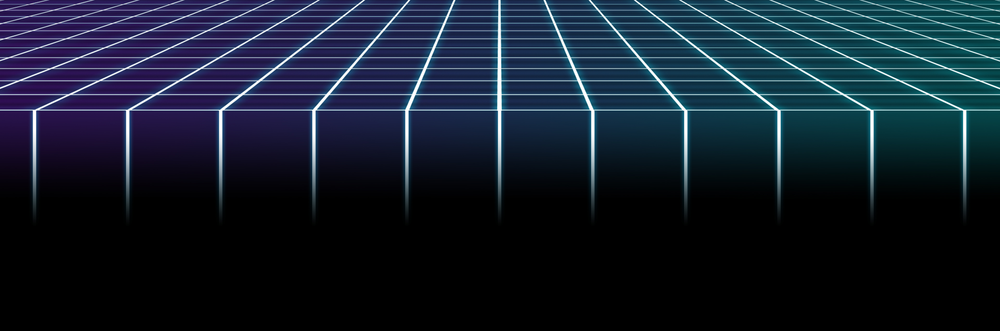
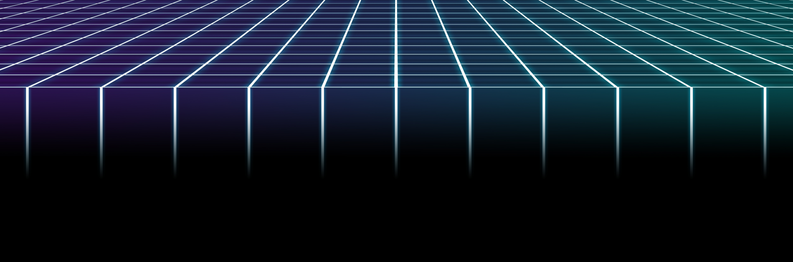
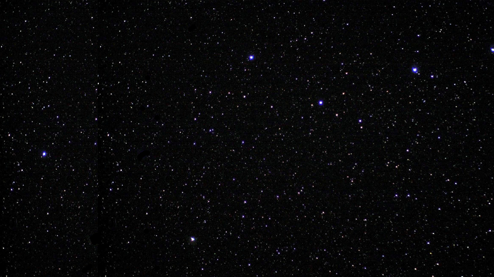
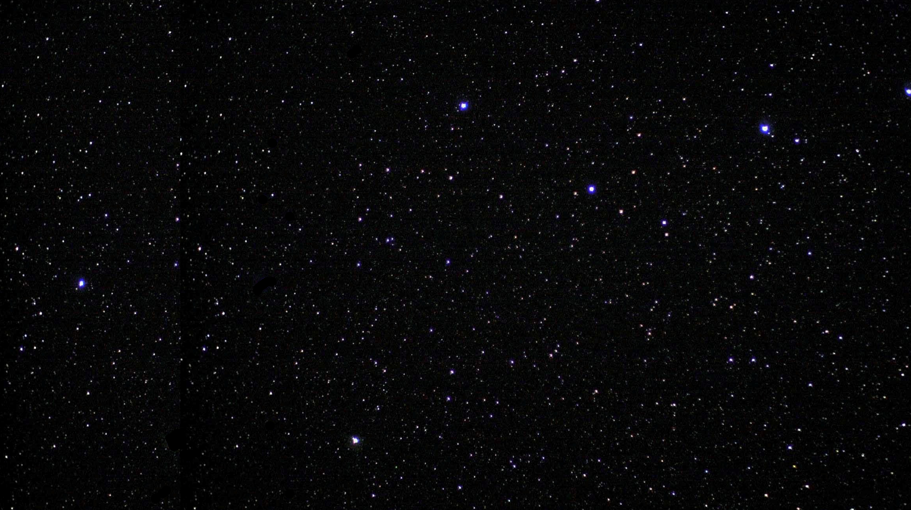

 


- Jeg hedder Oliver Vincent Sand Brodersen
- Jeg er 17 år
- Jeg arbejder i Megascope og fit&sund Horsens
- Jeg har en søster og en hund (same)
- Mine forældre er skilt
- Jeg har en k, som er en rigtig pige
- Jeg syntes Simon er høj
- Big Bang Theory er nok min yndlingsserie
- Casey Neistat er min yndlings-Youtuber
- Spionen fra U.N.C.L.E. er nok min yndlingsfilm
- Jeg kan rigtig godt lide byg-selv-burgere
- Jeg kan rigtig godt lide Simons lakselasagne, som han har en opskrift på på hans hjemmeside (sponsoreret punkt)
- Booster Free er min yndlings-Booster
- Jeg har lavet et par hjemmesider før denne
- Katte er ikke hunde og er derfor ikke lige så gode som hunde
- Batman over Superman
- Deadpool over Batman
- M&M's med peanuts er bedst
- Sour cream & onion er den bedste standard chipssmag
- Jeg har stadig en k som er en rigtig pige
- Jeg ber' til Harambe
- DER SKAL ANANAS PÅ PIZZA
- Jeg har ca. 46 kromosomer
- Jeg har ikke betalt for PhotoShop
- Jeg er bange for flyvende dyr, men Simon er bange for tuscher, så det er okay